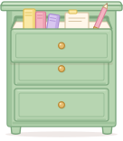

Short answers that work offline. Opening help never changes what you're doing.

Tap the laptop on your desk. Check the occasion, then tap Style me. You'll see three looks made from your own pieces.
If there aren't enough pieces, you'll see an honest partial result. Nothing is invented.
Swap a piece changes only that piece. Save look keeps it in Saved Looks.
Try it on makes a simulated picture of the look. It uses a picture only when you ask, and reopening one is free.
In Closet, tap Add a piece. Take a photo, pick one from Photos, or just type a name. Photos can come later.
Your original photo is always kept. Details you don't know can stay unknown.
A suitcase is a named group of pieces, like Jose's house. Tap the suitcase in your room to pick one.
Styling from a suitcase uses only its pieces. Deleting a suitcase keeps every piece.
Laundry tracking is a switch in Profile. When it's on, the hamper shows what's in the wash and Style Me skips those pieces until you mark them clean.
Turning it off keeps your marks, and every piece counts as available.
Style Me, swaps, Ask stylist and Try it on need a connection. Your closet, laundry, suitcases, saved looks and search work offline.
In this prototype every service is simulated.
Your closet, saved looks, search and making looks yourself are always free. Style Me, swaps, Ask stylist and try-on pictures use styling access.
Prices in this prototype are samples.
Try-on pictures are simulated previews. They can't show how something actually fits. Your measurements and fit notes are the better guide.
My Petite Style · prototype · fictional demo data